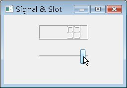

| 在 使用 Signal 與 Slot（使用按鈕關閉視窗） 中，QPushButton的clicked() Signal及QApplication的quit() Slot都不帶參數，Signal在發出時是可以帶參數的，而相對應的Slot也可以接受參數。 以下的例子將看到有參數的Signal發送及Slot接受，並也將介紹Qt元件的parent/child關係，這個程式將建立一個LCD數字顯示元件，以及一個拉桿元件，LCD數字將反應目前拉桿的進度： #include <QApplication> 在Qt中建立Widget時，要建立在heap區（即以new的方式），Qt會自動管理parent下child的delete，讓您不用親自管理具有parent/child關係的Widget建構與刪除，這可以避免memory leak，您要delete的只有那些沒有parent的物件，如果您將物件建立在stack區，程式將可能會有錯誤發生。 QWidget是Qt中所有使用者圖形介面元件的父類別，可在螢幕上繪製自身，可接受滑鼠、鍵盤等介面操作，一個QWidget可以指定它的parent 為哪個元件，而這也表示child可顯示的範圍將是在parent之內，parent沒有顯示的話，子元件也不會顯示。沒有指定parent的QWidget是一個獨立視窗（window），例如先前所看到的幾個Qt範例，無 論是QLabel或QPushButton，都沒有指定parent，它們可獨立的顯示在畫面之中，只要呼叫其show()方法。 在程式中建立了一個QWidget實例，並設定它的標題名稱，以及可拉動的最大（setMaximumSize）最小（setMinimumSize）尺寸，由於都設定為240X140像素大小，所以這個視窗就變為不可變動大小的了，也可以只使用一個setFixedSize()方法來設定：
QWidget *parent = new QWidget;
parent->setWindowTitle("Signal & Slot"); parent->setMinimumSize(240, 140); parent->setMaximumSize(240, 140); 這個QWidget沒有指定parent，所以它是一個獨立視窗，接下來的QLCDNumber實例建立時，指定了這個QWidget為它的parent，所以QLCDNumber被置入了QWidget之中成為child，可顯示的範圍限制在parent的邊界大小之中，它在parent中的位置為X: 70、Y: 20，長為100、寬為30（setGeometry()）：： QLCDNumber *lcd = new QLCDNumber(parent);
lcd->setGeometry(70, 20, 100, 30); 接下來的QSlider實例在建立時，也指定了這個QWidget為它的parent，程式中設定QSlider為水平拉桿（Qt:: Horizontal），可拉動的數值範圍為0到99（setRange()），目前拉桿游標值為0（setValue()），而它在parent中的位 置為X: 70、Y: 70，長為100、寬為30： QSlider *slider = new QSlider(Qt::Horizontal, parent);
slider->setRange(0, 99); slider->setValue(0); slider->setGeometry(70, 70, 100, 30); 當您拉動QSlider的游標，造成游標值變動時會發出valueChanged(int) Signal，參數int表示Signal帶有一個整數值，在這表示QSlider的游標值一併被發出，QLCDNumber的display(int) Slot接受Signal所帶來的整數值，可以在QLCDNumber顯示數字： QObject::connect(slider, SIGNAL(valueChanged(int)), lcd, SLOT(display(int)));
一個程式執行時的參考畫面如下所示：  |